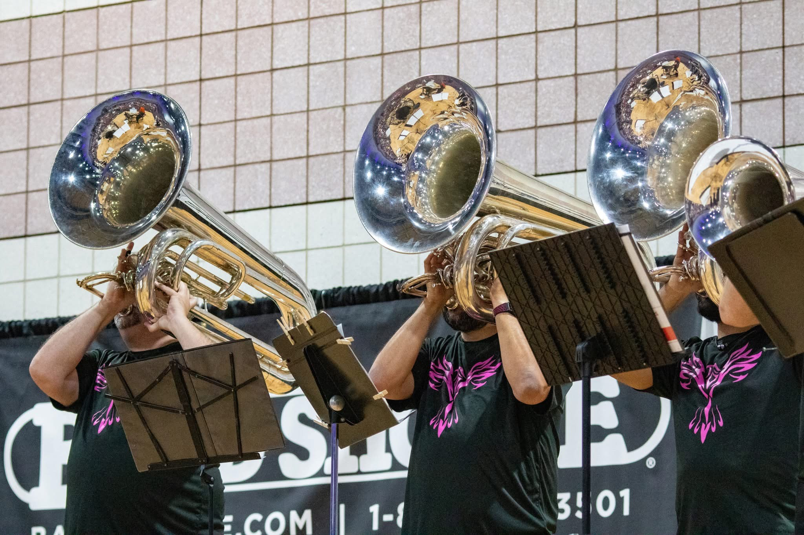
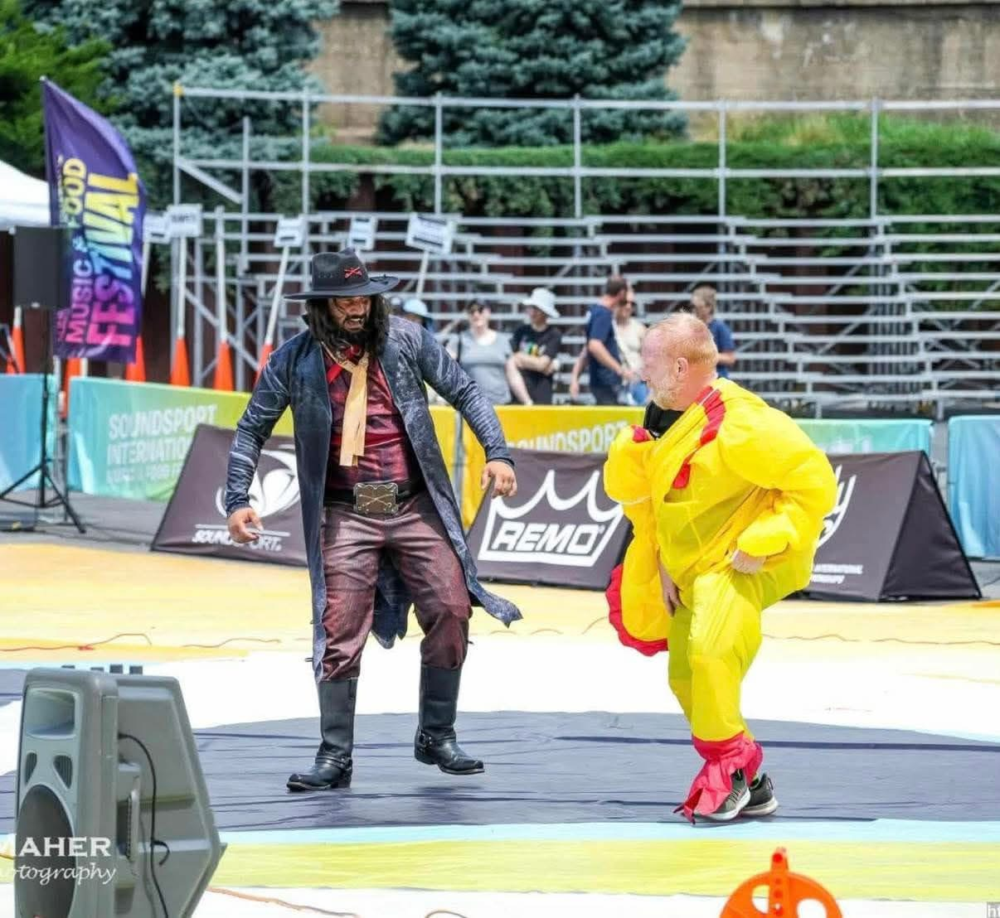
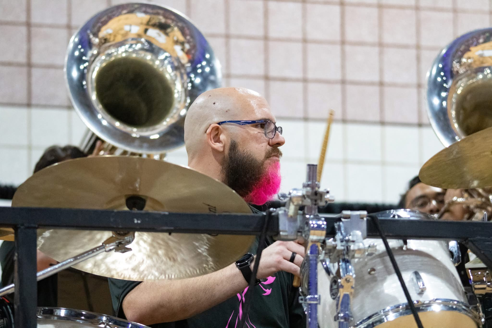
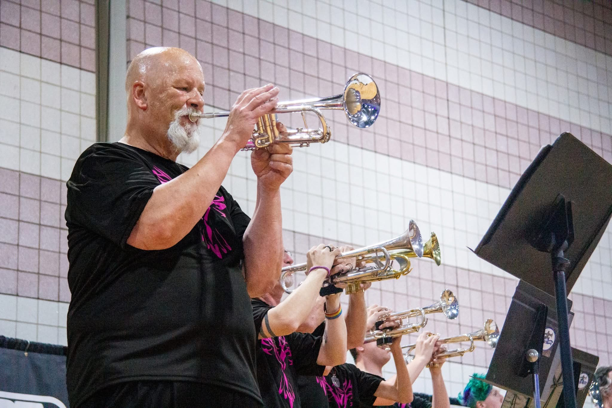
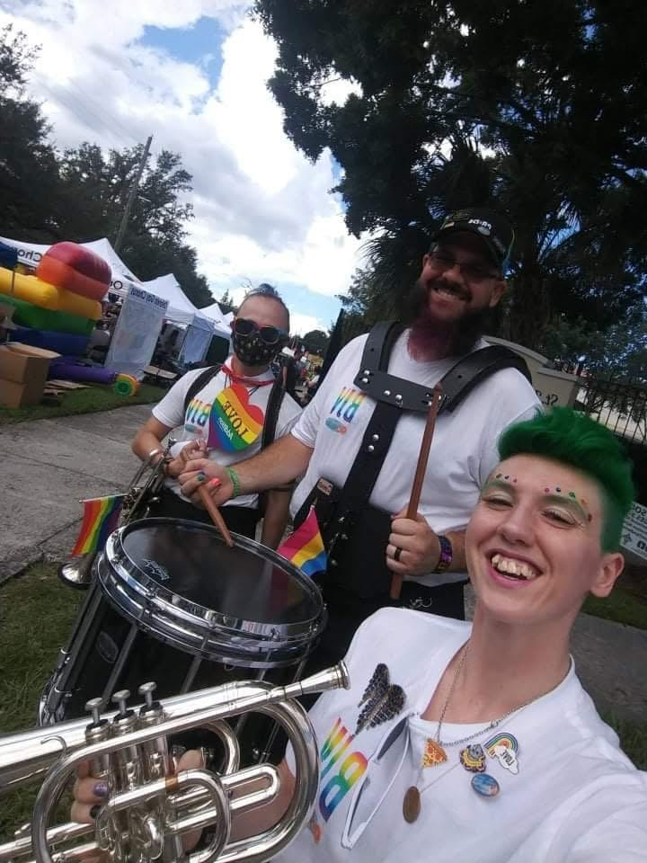

About PHOENIX
PHOENIX was founded, as a Spectrum Performing Arts (A Non-Profit Organization) ensemble, in central Florida during the winter of 2014 to fill a void in the local marching arts scene.
The group actually began as one of the first Independent WGI Winds ensembles. PHOENIX Winds debuted at the 2015 WGI Orlando Regional and began their competitive run at precisely 9:26:53 AM on Pi Day (3/14/15), capturing the Independent A Regional Championship.
In the years that followed, the group remained active, performing in select exhibition events in the Orlando area.
In 2022, the group reformed as a DCA mini corps and traveled for the first time to compete at World Championships in Rochester, NY. The corps came in 7th place during their DCA debut but garnered additional hardware via individuals and small groups representing the organization at DCA's annual Individual & Ensemble competition.
In the off-season, the parent company of PHOENIX, (Spectrum Performing Arts, Inc.) relocated to the high desert of New Mexico.
Following the move, the corps returned to Rochester bigger, better, and hungrier. They set a new corps record for high score and became the highest scoring drum corps in New Mexico history. The 2023 season also marked the beginning of a partnership with Eric Carr, better known as YouTube celeb EMC Productions - one that continues to this day.
The corps has endeared itself to fans over the years by playing recognizable melodic music and through their sense of humor, being one of the very few groups to program "silly" shows.
Like its namesake, PHOENIX undergoes an annual cycle - returning underground each autumn before rising from the proverbial ashes at the end of each summer.




